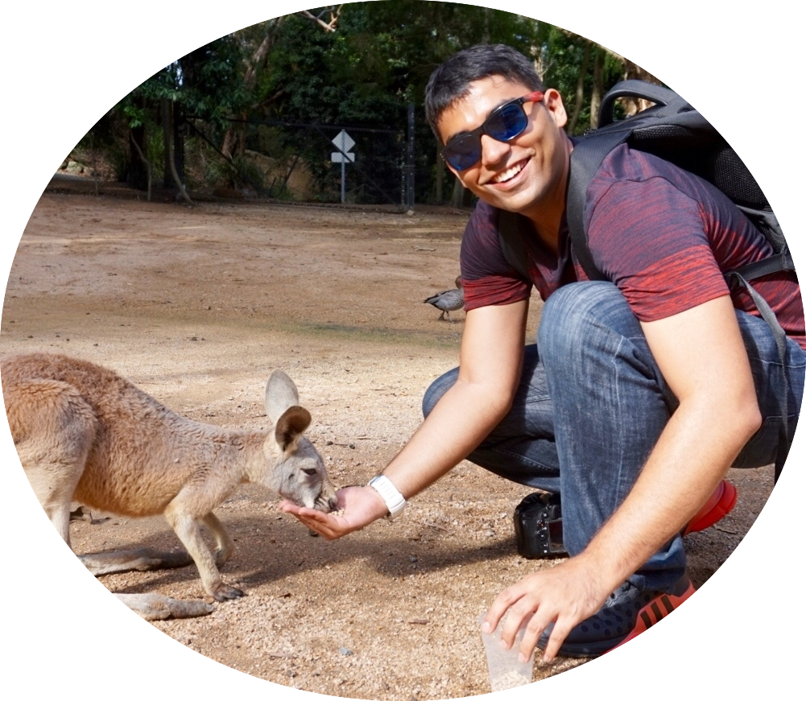

Lovish ChumI am a MS student in Computer Science, part of the Fu Foundation School of Engineering at Columbia University, where I work on self-supervised learning of video representations. I am advised by Carl Vondrick. From 2017 to 2019, I worked at IIIT Hyderabad, as part of CVIT where I worked with CV Jawahar and Vineeth N Balasubhramanian. Previously, I was an undergrad at IIT Kanpur working with Aditya Nigam and Phalguni Gupta. |

|
News |
|
Research ProjectsI'm interested in incorporating a causal structure to the computer vision tasks. |

|
Spatio-temporal Scene Graph Generation (Ongoing)Lovish Chum, with Xudong Lin and Carl Vondrick , 2020 |

|
Encoding Unertainity in Video Representation LearningLovish Chum, with Ruoshi Liu , 2020 |

|
Causal Physical ReasoningLovish Chum, with Chengzhi Mao Causal Inference Course, 2020 [Report] [Code] |

|
Optional Depth Pathway for Mask R-CNNLovish Chum, Jianjin Xu and Zhaoyang Wang Robot Learning Course, 2019 [Report] [Code] Instance segmentation is one of the most important perception tasks in computer vision. We present an approach to optionally use the depth given along an image to aid the performance on this task. We observe that depth information incorporated through Spatially-Adaptive (DE)normalization (SPADE) results in significant improvement on the task on NYUv2 dataset. Additionally, we observe that the use of ODM (Optional Depth Module) helps to prevent the degradation of performance even when the depth data is unavailable to the network. |

|
Beyond Supervised Learning: A Computer Vision PerspectiveLovish Chum, Anbumani Subramanian, Vineeth N. Balasubramanian & C. V. Jawahar Journal of Indian Institute of Science, 2019 [Publication] Fully supervised deep learning-based methods have created a profound impact in various fields of computer science. Compared to classical methods, supervised deep learning-based techniques face scalability issues as they require huge amounts of labeled data and, more significantly, are unable to generalize to multiple domains and tasks. In recent years, a lot of research has been targeted towards addressing these issues within the deep learning community. Although there have been extensive surveys on learning paradigms such as semi-supervised and unsupervised learning, there are few timely reviews after the emergence of deep learning. In this paper, we provide an overview of the contemporary literature surrounding alternatives to fully supervised learning in the deep learning context. First, we summarize the relevant techniques that fall between the paradigm of supervised and unsupervised learning. Second, we take autonomous navigation as a running example to explain and compare different models. Finally, we highlight some shortcomings of current methods and suggest future directions. |
Earlier ProjectsBesides my work on the RealSense depth sensors and the publications above, a sampling of my publicly disclosed work |

|
Contact Lens Detection for Iris RecongitionComputer Analysis of Image and Patterns, 2015 [Publication] [Report] slides / Collected a dataset in which users are wearing soft and cosmetic contact lenses. Emperically proved that a person wearing either of those lenses leads to an average degradation of 3.10% in EER when subject is wearing soft lens and 17.34% when subject is wearing cosmetic lens. Further, we propose a cosmetic lens detection approach based on Local Phase Quantization(LPQ) and Binary Gabor Pattern(BGP). Experiments conducted on publicly available IIITD Vista, IIITD Cogent, ND 2010 and self-collected dataset indicate that our method outperforms previous lens detection techniques in terms of Correct Classification Rate and false Acceptance Rate. The results suggest that a comprehensive texture descriptor having blur tolerance of LPQ and robustness of BGP is suitable for cosmetic lens detection. |
TeachingThese include coursework, side projects and unpublished research work. |

|
Bayesian Machine LearningCVIT, IIIT Hyderabad 2019-07-01 [Slides] A short course on Bayesian Machine Learning covering EM, Variational Inference and Latent Variable Models in a succinct manner. |

|
Linear AlgebraCVIT, IIIT Hyderabad 2018-07-01 [Slides] A short course on Linear Algebra covering matrix transformations and some form of matrix decompositions. |
|
Thanks Jon Barron for source |